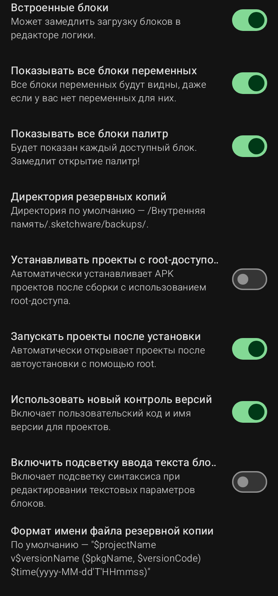

Настройки приложения (Внутренние параметры)

Эти настройки влияют на то, как выглядит и работает редактор Sketchware Pro. Будьте внимательны: некоторые из них могут замедлить работу программы.
- Встроенные блоки: если включено, программа будет использовать встроенные (заранее скомпилированные) блоки. Это ускоряет работу, но может ограничить гибкость. Рекомендуется оставить включенным.
- Показывать все блоки переменных: если выключено, вы увидите только те блоки переменных, которые уже создали. Если включено — будут показаны все возможные блоки, даже если переменных для них еще нет. Может замедлить открытие палитры блоков.
- Показывать все блоки палитр: показывает абсолютно все доступные блоки во всех палитрах. Сильно замедляет работу редактора логики. Включайте только при необходимости.
- Директория резервных копий: путь к папке, куда сохраняются автоматические резервные копии ваших проектов. По умолчанию: /.sketchware/backups/.
- Устанавливать проекты с root-доступом: автоматически устанавливает собранное приложение на телефон, используя права суперпользователя (Root). Требует наличия Root-прав на устройстве.
- Запускать проекты после установки: если включено, после автоматической установки приложение сразу откроется.
- Использовать новый контроль версий: включает новый механизм управления версиями проектов (позволяет задавать код версии и имя версии более удобно).
- Включить подсветку ввода текста блоков: включает подсветку синтаксиса при вводе текста в блоках. Удобно для написания сложного кода.
- Формат имени файла резервной копии: позволяет настроить, как будут называться файлы резервных копий (например, с использованием имени проекта, даты и времени).
Sketchware Pro 7 · Автор: RasNikGal · © 2026